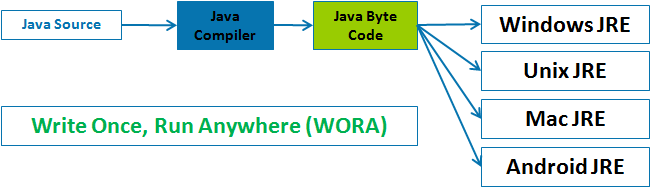

Основы языка Kotlin
Компиляция и JVM
Виртуальная машина Java (JVM)
Виртуальная машина Java (JVM) была разработана компанией Sun Microsystems, а ключевую роль в ее создании сыграл Джеймс Гослинг. Позднее Sun Microsystems была приобретена компанией Oracle. Слоганом компании является Write once, run anywhere (WORA).
JVM, если кратко - это интерпретатор байт-кода Java. Главной особенностью JVM является возможность компиляции и запуска програм на, практически, любой платформе, не меняя при это код Java (сильно упращая жизнь разработчикам ПО).


JVM может быть установлена на любую операционную систему (Windows, macOS, Unix-like, и т.д.). Таким образом, позволяя написать код один раз, но работать он будет на нескольких операционных системах.
Архитектура JVM и ее место в OS
Виртуальная машина Java является некой прослойкой между программным кодом и операционной системой:

В данном случае, под программа - это байт-код, инструкции которого понимает и выполняет JVM.
JVM состоит из трех основных компонентов:
загрузчик классов (Classloader);
область данных runtime (временеи выполнения);
исполнительный механизм (Execution Engine).

Загрузчик классов: Classloader отвечает за загрузку Java-классов с диска в память JVM, разрешение зависимостей между классами и инициализацию классов во время выполнения программы. Загрузчик классов следует иерархии делегирования, начиная с Bootstrap Classloader, затем Extension Classloader и Application Classloader.
Области данных времени выполнения: Во время выполнения программы JVM выделяет области памяти, называемые Runtime Data Areas. Эти области памяти включают в себя Heap, Stack, Method Area, Constant Pool и PC Registers, в которых хранятся данные, необходимые для различных аспектов жизненного цикла приложения.
Execution Engine: Execution Engine - это основной компонент, отвечающий за выполнение байткода Java. Механизм выполнения интерпретирует байткод и преобразует его в нативный машинный код во время выполнения. Он включает в себя такие компоненты, как интерпретатор, компилятор Just-In-Time (JIT) и сборщик мусора.
JVM Runtime Memory
Эффективное управление памятью - важнейший аспект архитектуры JVM, способствующий эффективному выполнению Java-приложений. JVM выделяет различные области памяти, называемые Runtime Data Areas, для различных типов хранения данных и манипулирования ими во время выполнения программы.

К основным областям памяти в JVM относятся:
Куча: Куча - это самая большая область памяти в JVM, которая разделяется между всеми потоками приложения. В ней хранятся инстанцированные объекты и массивы, созданные в процессе выполнения программы. Куча делится на области ‘Young Generation’ и ‘Old Generation’. В области “молодого поколения” хранятся вновь созданные объекты, а в области “старого поколения” - объекты, пережившие несколько циклов сборки мусора.
Стек: JVM создает отдельный стек для каждого потока. В стеке хранится информация о вызовах методов, локальные переменные и промежуточные результаты вычислений во время выполнения программы. Каждая запись в стеке называется фреймом стека, и JVM управляет фреймами стека независимо для каждого вызова метода.
Область методов: Область методов разделяется между всеми потоками приложения и хранит данные класса, такие как имена методов, имена переменных и значения констант. Область методов также содержит пул констант, в котором хранятся постоянные значения и символьные ссылки, используемые байткодом.
Регистры PC: Регистр PC (Program Counter) - это область памяти, содержащая адрес текущей выполняемой JVM инструкции для каждого потока. Регистр PC помогает JVM отслеживать, какая инструкция будет выполняться следующей.
Загрузчик классов
Управление памятью JVM
Файл .class и байт-код
До изучания основ синтаксиса языка Kotlin, следует освоить основы его компиляции и зачем нужна JVM.
Процесс компиляции кода происходит следующим образом:
На вход компилятора kotlinc поступают исходные файлы. Важно отметить, что java-файлы также поступают на вход компилятора. Это необходимо для возможности ссылаться на Java из Kotlin и наоборот. Далее, полученные файлы *.class передаются на компилятор javac вместе с исходными java-файлами. В итоге, компилируются все java-файлы, после чего собираются в файлы .jar.